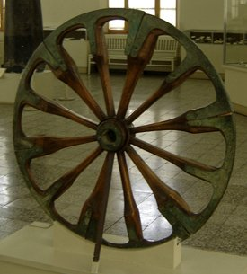

| LA RUEDA | |
|
 Rueda de carro hallada cerca de Susa, datada en el II Milenio a. C. National Museum de Irán. |
Fue inventada en el quinto milenio a. C. en Mesopotamia,
inicialmente, con la función de rueda de alfarero.
Posteriormente se empleó en la construcción de carros. Las
primeras ruedas eran discos macizos unidos a un eje que giraban
con ella. Hacia el 2.500 a. C., las ruedas giran mientras que el
eje permanece fijo al chasis del vehículo. |